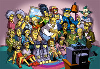
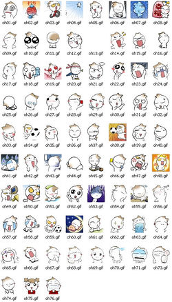
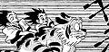
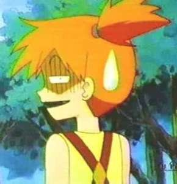
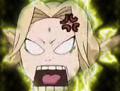
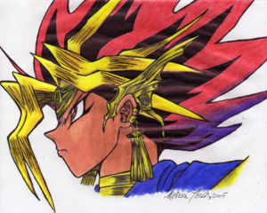
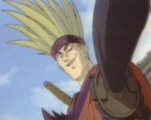

Anime
 De: La Frikipedia, la enciclopedia extremadamente seria.
De: La Frikipedia, la enciclopedia extremadamente seria.
| De la serie fenómenos sociológicos:
|
| Anime
|
| 
|
| Anime puro: ¿Comentarios, dudas?
|
|
| Fenómeno sociológico
|
Japonicus dibujicus epilépticus
|
| Principios
|
Hace la porrada de años, en un lugar del Fujiyama de cuyo nombre no quiero acordarme...
|
| Zona de origen
|
¡Ya he dicho antes que en el Fujiyama!
|
| Consecuencias
|
Lo más grave es que hagas Cosplay de alguien ridículo (Dan Hibiki, Keitaro Urashima, Naruto,Goku...)
|
| Símbolos típicos
|
La bandana de Nabruto, la bandera de One piece, Naru Narusegawa...
|
| Frikismo
|
Bastante alto (más o menos como Pau Gasol)
|
| ¿Gusta a la gente normal?
|
Ni de coña, pero puede absorberlos.
|
| ¿Recomendable?
|
Solo en dosis de dos capítulos al día (más puden hacer que te conviertas en un otaku de grado medio)
|
| Máximo exponente
|
El Hentai
|
Dibujitos bidimensionales de perfil dibujados por los egipcios en el siglo XIX.
Entre sus características residen en tener solo dos movimientos bucales: - y O, ojos enormes que ocupan el %180 de su cara, peinados que desafían a la gravedad y que se mueven a apenas 8 cuadros por segundo.
También dícese del imperativo de segunda persona singular en forma de cortesía del verbo animar. Este verbo comenzó a usarse durante la Gran Catástrofe del 96, cuando los españoles emigraron todos a Japón y se encandilaron de sus dibujos animados.
Actualmente es la mayor exportación de Japón con gran peso del anime Osamu Tezuka.
Éstos normalmente tienen dos trabajos, y por alguna extraña razón siempre los protagonistas son idiotas como Goku o Naruto. Los dibujos de anime tambien tienen dos trabajos: el que hacen en el anime, y como actores y actrices porno.
Anime y "cultura" japonesa
Normalmente los frikis del anime se "interesan" por la cultura japonesa y todo lo relacionado con Japón hasta el grado de comer sushi (mezcla de porquerías de mar y pescado crudo, esto es debido a que a los japoneses les da pereza cocinar) y demás jaladas. Los frikis que quieran jugar a un juego con muchos personajes de anime juntos, les recomiendo este Mugen(lucha): Isamu(ahí tiene la dirección para bajarlo).
Personajes
En un anime siempre los personajes son asi
- El personaje principal siempre tiene algo especial
- El personaje secundario siempre es emo
- La tipica puta de todos los animes
- El personaje que es violado por los demas en los comerciales
- El malo
- Su esclavo sexual o secuaz
- Un tipo sin sexo aparente
Leyes del anime
 Tras décadas de perfeccionamiento y evolución el anime finalmente sirvió para algo tangible
En el anime hay una serie de "reglas" o clichés (como quieras verlo) que por lo general aparecen en todo anime:
- Ley de la Irregularidad Metafísica: Las leyes normales de la física no sirven
- Primera ley de la Gravitación diferenciada: Cada vez que alguien salta, es lanzado, o de alguna otra manera acaba por los aires, la gravedad disminuye por lo menos 4 veces.
- Segunda ley de la Gravitación diferenciada: Una vez que un personaje u objeto alcance cierta altura al ser mandado a volar (varia de anime a anime), éste se convertirá en una esfera de plasma autogravitante, en equilibrio hidrostático, que genera energía en su interior mediante reacciones termonucleares.
- Ley de la piel de hierro: Cuando un personaje pone los brazos en X frente a él nada le hace daño, a menos que sea un personaje secundario, "cosa que siempre ocurre"
- Ley de la Amplificación Sónica, Primera Ley de la Acústica en el Anime: En el espacio, sonidos fuertes, como explosiones, son incluso más fuertes porque no hay aire que se interponga en el camino
- Leyes del Movimiento en el Anime:
- Ley del Empuje Constante (Primera Ley del Movimiento en el Anime): En el anime, Empuje Constante equivale a Velocidad Constante.
- Ley de la Movilidad Mecánica (Segunda Ley del Movimiento en el Anime): Cuanto mayor es un dispositivo mecánico, a mayor velocidad se mueve. Los Mecha con armadura son los objetos más rápidos conocidos por la ciencia humana.
- Ley de la Urgencia Acústica (Tercera Ley del Movimiento en el Anime): Si un personaje necesita un impulso extra para cumplir su objetivo, gritar '¡¡¡AHHHHHHHHH!!!' le proporcionará dicho impluso, ignorando así todas las demás leyes previamente o posteriormente establecidas.
- Ley de la Linealización del Entorno en Procesos Dinámicos (Cuarta Ley del Movimiento en el Anime): Alrededor de todo ser, arma, proyectil, objeto, camejamejá o lo-que-sea que inicie un proceso de movimiento, se manifiestan numerosas líneas paralelas. Sorprendentemente, ninguna materia sólida, orgánica o inorgánica, inerte o viva, se ve traspasada por ellas. Los físicos de la Universidad de Ayogua pensaron en un primer momento que podía tratarse de lluvia, pero rechazaron esta tesis cuando descubrieron, tras una ardua y exhaustiva investigación, que la lluvia no cae en horizontal.
 Ley 6.4: Ley de la Linealización del Entorno en Procesos Dinámicos (Cuarta Ley del Movimiento en el Anime): Los Físicos de la Universidad de Ayogua aún siguen investigando este extraño suceso paranormal.
- Ley de la Meseta Parabólica (Quinta Ley del Movimiento en el Anime): También llamada Ley de la Gravedad Cero Casual, se da cuando un personaje necesita llegar desde una zona del escenario a otra cuando hay un vacío de por medio. En estos casos el personaje dará un pequeño salto hacia arriba y continuará hacia delante describiendo un movimiento rectilíneo uniforme, con lo que ignorará toda atracción gravitatoria mientras esté en peligro de caer al vacío. Una vez que dicho personaje se encuentre cerca del punto de destino, la gravedad volverá a actuar para que aterrice sin problemas. Un claro ejemplo son los saltos de nuestro amigo Naruto entre árbol y árbol.
- Ley de la Variabilidad Temporal: El tiempo no es constante. Se detiene para el héroe cada vez que hace algo "guay", "cool" o impresionante; se ralentiza cuando amigos y amantes son asesinados y comienzan a recordar todo lo bueno que vivieron con ellos, auque a nosotros no nos interese o ya lo sepamos; y se acelera cada vez que hay una pelea.
- Leyes de la Mortalidad Temporal:
- Primera Ley de la Mortalidad Temporal: Tanto los buenos como los malos mueren de una de estas dos maneras: o bien tan rápidamente que no lo ven venir, o es un asunto que se alarga muuucho tiempo en el que el personaje filosofa acerca de las obras de la sociedad, la existencia humana o por qué la tostada cae siempre con el lado de la mantequilla hacia abajo.
- Segunda Ley de la Mortalidad Temporal: A los malos les lleva algún tiempo morir... Independientemente del daño físico. Incluso cuando los malos mueren tan rápido que ni lo vieron venir, les lleva un tiempo darse cuenta de que han muerto. Esto se atribuye a la creencia de que ser malo daña al Lóbulo de la Realidad del cerebro, y de que el dolor y la muerte son psicológicos.
- Ley del Énfasis Dramático: Las escenas que involucran cantidades extremas de acción se representan con planos estáticos o pantallas negras con un rayo de un color brillante (normalmente rojo o blanco).
- Ley de la Multiplicidad Dramática: Escenas que solo ocurren una vez, por ejemplo, el bueno dándole una patada al malo en la cara, se ven al menos 3 veces desde 3 ángulos distintos.
- Ley de la Combustibilidad Inherente: Todo explota. Todo. (Michael Bay APPROVES)
- Primer Corolario: Cualquier cosa que explota se hincha primero.
- Segundo Corolario: Las ciudades son las sustancias más explosivas conocidas por la ciencia humana. Tokyo en particular parece ser la ciudad más inestable, siendo mencionada a veces como la "Ciudad Cerilla".
- Tercer Corolario: Las computadoras y cualquier máquina en general, explota al ser alcanzada por cualquier detonador, o incluso al experimentar un fallo.
- Cuarto Corolario: Curiosamente, un personaje (sobretodo un héroe) es impresionantemente resistente a los ataques de explosiones.
- Ley de la Emisión Flogistática: Todas las cosas emiten luz desde heridas fatales.
- Ley de la Emisión Energética: Siempre hay una acumulación de energía (conocida como "bola de energía") antes de que un Mecha o nave espacial dispare. Por las cualidades explosivas de las armas, se cree que esto está relacionado con la Ley de la Combustibilidad Inherente.
- Ley de la Magnitud Letal Inversa: El potencial destructivo de un arma es inversamente proporcional a su tamaño
- Primer Corolario: Lo pequeño y mono siempre se volverá grande y feo. También conocido como fenómeno A-Ko.
- Ley de la Inexhaustibilidad: Nadie se queda sin munición JAMÁS. A menos, por supuesto, que se encuentre arrinconado, sobrepasado en número, contra una ¿clase superior? o inconsciente. O si se queda sin municiones, de algún lugar saca municiones para poder seguir atacando.
- Ley de la Puntería Inversa: La puntería de uno de los buenos cuando está operando con cualquier tipo de arma de fuego se incremente según aumenta la dificultad del tiro. La puntería de los malos cuando están operando con armas de fuego se decrementa a medida que disminuye la dificultad del tiro (También conocido como Efecto Stormtrooper). Ejemplo: Uno de los "buenos", borracho, agarrado por un vehículo móvil y desplazado de arriba abajo siempre atinará, mientras que varios batallones de "malos" disparando a un "bueno", solo, en campo abierto, siempre fallarán.
- Primer Corolario: Cuantos más "malos" haya, menos probable será que acierten a alguien o hagan un daño real.
- Segundo Corolario: Cada vez que un "bueno" se enfrente a una cantidad de enemigos inconmensurable, los "malos" se dispondrán en filas, permitiendo al héroe eliminarlos con una única ráfaga de fuego automático, y después escapará.
- Tercer Corolario: Cada vez que un "bueno" sea herido por fuego enemigo, se encontrará en un "área del bueno", normalmente una herida en el hombro o el brazo, que restringe al "bueno" de hacer cualquier cosa más intensa que conducir, disparar armas, utilizar armas de melée, operar con maquinaria pesada o practicar complejas maniobras de artes marciales.
- Ley de la Capacidad de Hemoglobina: El cuerpo humano contiene más de 144 galones de sangre (comprobados), bajo alta presión.
- Ley de la Consistencia Demónica: Los demonios y otras criaturas sobrenaturales tienen al menos tres ojos, montones de colmillos, tienden a ser amarillos-verdes-marrones (aunque el negro no es un color desconocido) y sólo pueden ser heridos por armas de cuchilla siendo usadas por el bueno.
- Ley de la Infiabilidad Militar: Armadas del tamaño de una galaxia, ejércitos enteros y grandes máquinas de guerra llenas de guerreros crueles sedientos de sangre y sin corazón pueden ser detenidos y derrotados con un sencillo e insignificante ejemplo de una emoción tierna/cariñosa o una canción o niño.
- Ley de la Infiabilidad Táctica: Los genios tácticos no lo son...
- Ley de la Indetectabilidad Inconsecuencial: La gente jamás nota los pequeños detalles, como partes del cuerpo que faltan o heridas del tamaño de Seattle.
- Ley de la Intelectualidad Juvenil: Los niños son más listos que los adultos, y casi siempre dos veces más irritantes.
- Ley del Americanoantropomorfismo: Los americanos en el anime aparecen en 2 papeles, ya sea como un malo realmente desagradable y flaco o como un "bueno" grande y estúpido. Y siempre tienen ojos pequeños.
- Primer Corolario: Las únicas personas más estúpidas que el americano grande y bobo son los traductores americanos (conocido en ocasiones como el efecto Green Line/Línea Verde, no sé si se refiere a lo que es la línea en sí o a una entidad).
- Segundo Corolario: Las únicas personas más estúpidas que los traductores americanos son los editores y censores americanos.
- Tercer Corolario: Las únicas personas más estúpidas que los editores y censores americanos son los estudios y compañías desde Traducción, Edición y Censura americanos.
- Ley de la Proporcionalidad Mandibular: El tamaño de la boca de una persona es directamente proporcional al volumen al cual están hablando o comiendo.
- Ley de la Mutación Felina: Cualquier mutación medio gata / medio humana invariablemente:
- Será mujer
- Poseerá orejas y posiblemente cola como resultado de una mutación genética
- Y llevará tan poca ropa como sea posible, si es que lleva alguna
- Ley de la Facilidad de Uso Tecnológica: El adiestramiento formal requerido para operar una nave espacial o mecha es inversamente proporcional a su complejidad.
- Corolario: El adiestramiento se simplifica dramáticamente si el piloto a ser entrenado es menor de edad: el funcionamiento de la máquina incluso puede llegar a ser descubierto empíricamente.
- Ley de la Luminiscencia en Melée: Cualquier ser que muestre niveles extremadamente altos de habilidad en artes marciales y/o emociones violentas emitirá una luz en forma de aura radiante. Esta aura es usualmente azul para los buenos y roja para los malos. Esto se atribuye a que el Bien está más alto en el espectro electromagnético que el Mal.
- Ley del Antagonismo No Antropomórfico: Todas las razas feas no humanoides son hostiles, y usualmente inclinadas a destruir a la humanidad por alguna u otra razón oscura siempre similar.
- Ley de la Ilógica Política: Las tramas e intrigas políticas no necesariamente necesitan tener pies o cabeza; tampoco necesitan ser complejas (o realistas). Siempre hay reinos enculetos ("Reino de Zang", "Reino del Diamante", etc.). El mundo está dividido en cinco partes: Este, Oeste, Norte, Sur y Centro: en el Centro vive el Rey del mundo, que generalmente es un perro bigotudo que se llama asi, "Rey del mundo".
- Ley de la Aerodinámica Topológica:
- Primera Ley de la Aerodinámica en el Anime: CUALQUIER forma, no importa cuán enrevesada o extraña sea, es automáticamente aerodinámica.
- Ley del Atuendo Probable: La vestimenta en el anime sigue ciertas pautas predecibles:
- Los personajes femeninos llevan tan pocas prendas como sea posible, independientemente de si son social o meteorológicamente apropiadas.
- Cualquier mujer con una cantidad de ropa excesiva invariablemente verá sus ropas desgarradas o arrancadas de alguna manera. Si no hay oportunidad de arrancar las prendas anteriormente mencionadas, inexplicablemente se dará una ducha sin razón aparente (También conocido como la Escena de la Ducha Gratuita).
- Cada vez que haya viento de frente, los personajes masculinos llevarán invariablemente una capa larga que no obstaculiza el movimiento y que ondea dramáticamente tras él.
- Primer Corolario (Crio-adaptabilidad): Todos los personajes de anime son resistentes a temperaturas extremadamente frías y no necesitan llevar prendas pesadas o cálidas en la nieve.
- Segundo Corolario (Invulnerabilidad Indecente): Los bikinis hacen al portador invulnerable a cualquier forma de daño siempre y cuando griten cual niñitas enfrente de un violador prendido.
- Ley de la Omnipotencia Musical: Cualquier personaje con talento musical (para cantar, tocar un instrumento...) es automáticamente capaz de hacer cosas mucho más "simples" como pilotar mechas, luchar contra el crimen, detener una guerra intergaláctica y así... sobre todo si jamás lo han intentado antes.
- Ley de la Aglutinación Quintupular: También llamada la "Regla de los 5 Hombres": cuando los buenos se agrupan, suelen hacerlo en grupos de 5. Hay 5 posiciones básicas, que son:
- El héroe / líder (Naruto, Ichigo, Seiya, Inu Yasha, Goku, Yoh Asakura, Ash)
- Su novia (Kagome, Hinata, Rukia, Saori, Keiko Yukimura, Misty, Anna Kyoyama)
- Su mejor amigo / rival (Shiryu primero, luego Ikki un rato; Vegeta, Sasuke o Sai, Kazuma Kuwabara / Hiei, Tao Ren, Gary Oak)
- Un bruto enorme (Majimbu, Joey Wheeler)
- Un enano / niño (Shippo, Krilin/Gohan, Konohamaru, Kiki, Mokuba, Manta Oyamada)

Ley 39: Ley de la Hemorragia nasal: ¿Que cómo sabemos que Ebisu de
Naruto se excitó?
- Ley de la Capacitancia Extradimensional: Todos los personajes femeninos en anime tienen un espacio de almacenamiento extradimensional de volumen variable en alguna parte de su persona del que pueden obtener instantáneamente cualquier objeto en un momento dado.
- Corolario (Regla del Martillo): El objeto más comúnmente almacenado es un mazo pesado, que puede usarse con puntería infalible sobre cualquier personaje masculino que lo merezca. Otros objetos comunes incluyen trajes/uniformes, armaduras/trajes de poder y grandes bazookas.
- Ley de la Amnesia Mundial: Cuando ocurre una catástrofe o se destruye la ciudad, generalmente al día siguiente nadie se acuerda del suceso, ni aparece en las noticas ni nada.
- Ley del Gobierno GWB: El gobierno es la cosa mas inútil que existe, así que se sospecha que Bush maneja los gobiernos. Ejemplos:
- La Inutilidad de los Policías: Los policías se dedican a disparar pelotitas de papel de sus pistolas, dejándole todo el trabajo de matar al enemigo (sea criminal, demonio, extraterrestre o lo que sea) al héroe, y se les mata con suma facilidad.
- Desaparicion del Mandamás: El presidente/alcalde/gobernador NUNCA aparece ni se menciona.
- Ley de la Emisión Hidrostática: Los ojos tienden a ser bastante grandes en el anime. Esto es porque contienen varios galones de agua, que pueden ser liberados instantáneamente a alta presión a través de grandes conductos lacrimales. El volumen real de agua contenido en los ojos es desconocido, pues no hay pruebas que sugieran que estas reservas pueden agotarse. La razón por la que se suele acumular agua en los ojos es que los personajes de anime sólo tienen una gran glándula sudorípara, localizada en la parte de atrás de la cabeza. En situaciones de estrés extremo, vergüenza o preocupación, esta glándula exuda una gota única, pero muy grande, de fluido sebáceo.
- Ley de la Atracción Inversa: El éxito a la hora de encontrar a la pareja adecuada es inversamente proporcional a lo desesperado que estés por conseguirla. Cuanto más quieres, menos consigues.
- Corolario: Desafortunadamente, esta ley no parece aplicarse al otaku en el mundo real.
- Ley de la Hemorragia Nasal: Cuando son estimulados sexualmente, los hombres en el anime no tienen erecciones: sangran por la nariz. Nadie está seguro de por qué ocurre esto, sin embargo... la teoría actual sugiere que unos ojos más grandes conllevan senos más pequeños y un tejido senoidal más fino. Las mujeres no sangran por la nariz, pero invariablemente se ruborizan un montón a lo largo de mejillas y a través de la nariz, lo que indica un gran flujo de sangre a la región.
- Ley de la Xylolaceración: Las espadas de madera o bambú son tan afiladas como las metálicas, si no lo son más.
- Ley de la Omnipotencia Juvenil: Envía siempre a un niño a hacer el trabajo de un hombre. Lo hará en la mitad de tiempo y con el doble de angustia.
- Ley de la Emisión Luminosa Ocular: Cuando cualquier personaje de anime tenga un encuentro desagradable con su eterno rival, al mirarse de frente los ojos de éstos automáticamente emitirán rayos luminosos que siempre chocarán al centro de la imagen.
- Ley de la Clamovocación Nominativa: La probabilidad de éxito y el daño efectuado por un ataque de artes marciales es directamente proporcional al volumen al cual se pronuncia el nombre completo del ataque; asimismo, mientras más largo y complicado sea el nombre del ataque, más daño causará (por eso un hadouken no es tan poderoso como un Shinku Tatsumaki Senpukyaku).
- Ley de la Metamorfosis Ininterrumpible: Independientemente de cuánto tiempo dure la secuencia de transformación, o del número de veces que lo hayan visto antes, cualquier "malo" que asista a la transformación de un mecha/héroe/heroína está demasiado asombrado como para hacer cualquier cosa para interrumpirla.
 Ley 37: Ley de Emisión Hidrostática: claro ejemplo en Misty de
Pokémon Ambos ejemplos de excreción de líquidos en
Rurouni Kenshin(¿Que por qué lo he puesto de nuevo? ¡¡PORQUE ME DA LA GANA!! ¡¿ALGUN PROBLEMA?! ¡AHH!
- Ley del Reconocimiento Endeble: Simplemente el cambiarte de ropa o llevar una máscara puede hacerte completamente irreconocible incluso para tus amigos más cercanos y parientes, lo que demuestra la estupidez de los personajes.
- Ley de la NO-DESTRUCCIÓN DE LAS ONDAS DE SONIDO: Se da en un combate, cuando los enemigos están distantes entre sí: unos 200 metros (o más). Digan lo que digan, en un tono normal... será escuchado por el otro rival tropecientos metros más distante. No hay necesidad de gritar.
- Ley de la Relación Monetaria: Todo héroe de anime es un pobre muerto de hambre, en contraposición a su novia, que es una princesa o heredera de la compañía vigente mas poderosa del planeta.
- Ley de la Conservación de las Ondas de Sonido: La velocidad de las ondas de sonido es netamente proporcional a la persona que las exclama o el poder que las produce, por lo que no importa si la batalla se da a una velocidad igual o superior la del sonido, todo se oye al mismo tiempo que lo que pasa: esto también elimina el "Boom Sónico".
- Primer Corolario: Si alguien trata de dar un plan secreto de un mecha a otro, tendrá problemas de audición pero el enemigo los escuchará perfectamente.
- Segundo Corolario: Si dicen dentro de un mecha: "Rayos, parece que perderé", el enemigo, aún sin bocinas dentro de su mecha, lo escuchará perfectamente y hasta le contestará (aplica esto también en mensajes telepáticos).
- Ley de la Explosión Alargada Planetaria: La luz proveniente de la explosión de un planeta debe alargarse siempre de forma horizontal y anchearse en el medio.
- Ley del Suelo Resistente: El suelo debajo de un guerrero que corre a la velocidad de la luz nunca debe romperse hasta que haya pasado de ahí, y debe resistir la fuerza que ejerce sobre él la acción de alguien que sujeta en sus manos un rayo de energía que podría volar al universo y a sus alrededores.
- Ley de la Deformación Facial Femenina: Toda mujer tiene la habilidad de deformar su rostro en caso de enojo, especialmente por acción de celos al tipo que supuestamente no ama. A esto se le añade un aumento de fuerza si el chico la insulta.
 Ley 51: "Deformacion facial femenina": Tetunade-sama cabreada gracias a Naruto... un claro ejemplo de esta ley
- Ley de la Intuición Visible: La intuición o sexto sentido se define como el rayo de luz que atraviesa la cabeza del personaje que lo utiliza, el cual nadie sabe de dónde salió o a dónde va, ademas de tragarse (casi siempre) la luz de fondo.
- Ley del Traspaso Fantasma: Al saltar 2 personajes y mandar cada uno un puñetazo, golpe de espada o lo que sea, los átomos de ambos personajes perderán toda masa, materia y ubicación en el espacio, lo que permite que puedan atravesarse sin problemas. (Única excepción conocida: La batalla de Seiya y Shiryu en la "Guerra Galáctica".)
- Ley del Maquillaje Eterno: El maquillaje de una mujer NUNCA debe correrse por más golpes, viento, tierra, energía, sudor, etc que reciba. Al mismo tiempo, debe de estar impecable el día siguiente después de dormir. Además, el hecho de convertirte en chica por una reacción al agua te garantizará una sombra instantánea y perfecta sobre tus párpados.
- Ley de la Piel Femenina Luminosa: Toda mujer tiene la capacidad de irradiar luz en caso de enojo: se cree que es un un efecto secundario de la ley anterior por el excesivo contacto del maquillaje con la piel, o consecuencia de la siguiente.
- Ley de la Piel Femenina en Llamas: Invariablemente, toda mujer será rodeada por llamas cuando se le refiera en retrospecto como trofeo, cuando la envuelva una furia ardiente procediente de los ojos hacia el fondo del "escenario" y cuando tenga una enfermedad quemo-tu-ropa-cuando-te-enchilas guay, dejándola desnuda y pobre en cada ocasión
- Ley de los Padres Ingenuos: Los padres son las criaturas más ingenuas de la Tierra: por más cosas raras que haga su hijo/a nunca notarán algo extraño o fuera de lo normal, excepto que las calificaciones bajen.
- Teoría del Hoyo Negro del Escudo: Todo escudo del mundo viene equipado con un Hoyo Negro que se activa cuando te lo colocas en la espalda, permitiéndote guardar lo que quieras en él.
- Ley de la Conservación del Sitio de Pelea: Esto es aplicable siempre y cuando el lugar tenga paredes, columnas, etc. (una casa, edificio, templo.....) Si el malo no decide desde un principio destruir el lugar, no importa cuántas paredes, columnas, techos u objetos hayan sido destruidos, la estructura se mantendrá prácticamente inmutable, o por lo menos de pie, sin problemas, hasta que termine la pelea o el bueno huya del lugar dejando al malo atrapado, que de alguna forma logra escarpar persiguiendo al bueno.
- Primer Corolario: No importa que sea físicamente imposible colocar más de 100 columnas de un metro de grosor en una casa de cuanto mucho 20 metros de frente, si un golpe manda a volar a uno de los combatientes, éste atravesará en su trayectoria ese número de columnas. Como mínimo.
- Segundo Corolario: No importa cuántas cosas se destruyan, jamás habrá escombros.
- Tercer Corolario: Si el sitio pertenece al malo, la decoración normalmente es tétrica: esto también es aplicable a castillos o comunidades que haya conquistado el malo: automáticamente pasarán de lindas y hermosas a tétricas.
- Ley de los Fenómenos Naturales: Los malos siempre controlan el clima o fenómenos naturales. En cuanto aparecen, se hace de noche, hay un eclipse, hay un terremoto o inexplicablemente empieza a llover.
- Ley de Aviso Animal: No importa si es un desierto y no debería de haber animales, siempre que un malo aparece, se acerca, o va a hacer alguna maldad, una bandada de aves sale volando de algún lugar inexplicable huyendo del malo, hecho que ningún bueno toma en cuenta.
- Ley de las Armas Supuestamente Indestructibles: Existen dos variantes:
- Que el arma sea tan indestructible que con el objeto más absurdo se destruye.
- Que el arma sea tan indestructible que el portador, sitio, malo, planeta, universo, cualquier cosa sea destruida incluyendo al tiempo, y el arma se mantendrá intacta y sin ningún rasguño.
- Ley de las Frases Célebres:
- Frase Omnipotencia: Siempre que un malo diga que es el más poderoso del universo, no tardarán más de dos episodios en que el bueno lo supere o aparezca un malo más poderoso.
- Frase Aviso: Por más que el bueno o malo te diga como destruirlo con pasos fáciles como receta de cocina o al estilo "Kill me for dummies" su antagónico jamás hará caso.
- Frase Idiota: Un bueno o un malo siempre tendrá una frase típica que repetirá una y otra vez, y todo otaku que lo vea intentará imitarlo mongólicamente (Por ejemplo, "Dattebayo").
- Ley de Explicaciones Innecesarias: Una estrategia, trampa activada, suceso o cualquier cosa siempre se explica, aun cuando las imágenes sean claras o ya se haya hecho.
- Sub-Ley del Hablar Solo: Cuando un personaje está explicando algo que no es necesario, nadie que esté a su alrededor (Ni tú mismo) le hará caso a lo que diga. Pero para que tú le hagas caso aplicara la siguiente Sub-Ley.
- Sub-Ley del Adobe Flash Player: Siempre cuando un personaje explica algo, el 90% de las veces lo va a ser con gráficos de animación multimedia o recursos audiovisuales.
- Ley de la Conservación del Poder de las Armas: Cualquier poderosa arma capaz de destruir/derrotar a un oponente de un único ataque será invariablemente reservada y utilizada únicamente como último recurso.
 Ley 69: Ley de Variabilidad del Croma Folicular: El cabello de
Yugi, perfectamente normal
- Ley de Graduación de Ataques: Similar a la anterior. Si un villano oficial tiene o conoce una ataque o movimiento que puede vencer al héroe en un un sólo golpe, éste no la usará hasta que el héroe haya acumulado suficiente fuerza como para soportarlo, vencerlo o encontrar una defensa.
- Corolario: Si dicho ataque poderoso ya ha sido usado no será usado de nuevo o ya será inútil debido a que se conoce su secreto.
- Ley de Superioridad Armamentista: Un hombre armado con una espada es tan peligroso o más que uno armado con un ametralladora o una AK-47.
- Primer Corolario: Pese a su poder, las espadas pueden pasar de cortar metal a no cortar carne humana, o bien herir considerablemente sin dejar rasguño alguno.
- Segundo Corolario: Un personaje herido por un ataque rápido de espada sale volando por los aires.
- Ley de la No Agotabilidad Económica: No importa si el personaje del anime trabaja o no, siempre tiene dinero para comer, comprar, y mantener a otras miles de personas en su casa (aunque no sea su casa)
- Ley de Variabilidad del Croma Folicular: Cualquier color en el espectro visible es considerado un color natural para el cabello. Este color puede variar sin aviso o explicación.
- Ley de la Permanencia Folicular: El pelo en el anime es prácticamente indestructible y puede resistir cualquier cantidad de condiciones meteorológicas, emisiones de energía, abuso físico o efectos explosivos y aún así permanecer perfecto. La única manera de herir/cortar el pelo de alguien es de la misma manera que se trata a los demonios, con armas de cuchilla.
 Ley 71: Ley de del Peinado Exagerado: Sho de
Samurai X es uno de sus más claros exponentes
- Ley del Peinado Exagerado: Mientras más exagerado sea el color y la forma del cabello de un personaje, éste será más temido (el peinado no se altera ni bajo condiciones de agua, lluvia, explosiones, etc).
- Corolario: El peinado SÍ puede alterarse si, y solo si está lloviendo, el personaje está en una batalla épica contra el malo más malo de la serie, y su pelo cae hacia abajo en modo gótico-amenazante cubriéndole los ojos y haciéndolo ver guay (si el personaje se ve como un puñetero emo cuando esto sucede su peinado no se puede alterar).
- Ley de las Triángulos Amorosos (u otras figuras geométricas): El protagonista siempre será perseguido por 5 o más mujeres, y éste no se interesa en ninguna más que a la que "no le interesa" éste.
- Ley de la Maldad justificada: Todo villano tiene una justificación en un evento traumático del pasado. Ejemplo: "Pobrecito Hitler, se le perdió el juguete que le regaló aquel judío"
- Ley de Resistencia Planetaria: Si un ataque destruye-mundos va dirigido a un villano, falla, y le cae al suelo, sólo se formara un cráter (como efecto máximo). Ejemplo: Cuando en Dragon ball desvian un kame hame ha de Goku y cae a la Tierra ésta no se destruye, aunque haya sido lanzado con toda su fuerza.
- Ley de Madurez Aparente: Todo anime que se respete contendrá suficientes escenas de desnudos parciales, desnudos totales, dramas personales, violencia, muertes, supuestos dilemas, referencias pseudoculturales, lecturas serias y cuestiones éticas como para que el público cautivo (Otaku) no se sienta disuadido de ver el programa debido la auto-vergüenza. También es conocida como la "Ley de protección del dinero de por medio por si el no infante se aburre de las caricaturas".
- Ley de las Tetotas: En todo anime nunca debe faltar la mujer que tiene las tetas gigantescas, y que además siempre tiene ganas de tirarse a todos los otros personajes aunque sean de su mismo sexo. En el caso del hentai siempre es la primera en ser violada, o la primera que tenga sexo.
- Ley de la Estabilidad Indumentaria: Análogo a la ley de Permanencia Folicular, la ropa es el material más resistente del mundo, capaz de soportar las mayores temperaturas y presiones del universo conocido, superando así la resistencia del diamante: nunca se verá la ropa de un personaje en llamas, corroída por ácidos u otros productos (clara excepción si dicho personaje tiene unas buenas peras), etc.
- Corolario: La ropa de algunos animes se destruye con suma facilidad, sobre todo las camisetas de los hombres (para mostrar sus músculos) y algunos zapatos, pero JAMÁS se romperá la parte del pantalón que pueda mostrar el pene del protagonista. (Única excepción conocida: Sora no Otoshimono.)
- Teoria de la Relatividad Corrosional Indumentaria: El desgaste sufrido por la ropa del protagonista es inversamente proporcional a los daños sufridos a su alrededor y directamente proporcional al daño recibido por el malo, de tal forma que si el protagonista fuese lanzado contra una montaña y en tal proceso dicha montaña quedase reducida a escombros, la ropa del protagonista quedaría intacta; asimismo, si el protagonista recibe una herida de muerte como un puñetazo que abre el abdomen destruyendo sus órganos internos, la vestimenta afectada recibiría un ligero desgarre casi invisible entre los cientos de litros de sangre expulsados posteriormente. Sin embargo, si el prota usa su ataque definitivo contra el malo la explosión resultante convertirá su atuendo en harapos.
- Ley de la Retardación Espacio-Temporal de Defunción: Si uno de los buenos es herido de muerte, el tiempo que tardará en palmarla es proporcional a la gravedad de la herida. Si es una perforación en el pecho morirá en cuestión de segundos, pero si le abren el vientre en canal, seguirá luchando hasta cargarse a todos los malos, y después se tumbará, echará un discurso, hará una leve sonrisa mientras cierra los ojos y se quedará fiambre (si es un viejo la diñará justo después de revelar un secreto importantísimo, el cual nadie entenderá). Similarmente, si un malo maloso se muere, será en una explosion de ataque final y tardará un buen rato en desintegrarse mientras reflexiona sobre su vida y deja su mensaje final. También cabe destacar que si un personaje se va a sacrificar para alejar una bomba de su grupo que explotará en cualquier momento y así salvar al mundo, la bomba se desactivará el tiempo que haga falta para que el personaje dé su discurso final y se despida de todos.
- Ley de la Compresión Potencial Cuanto más poderoso es un ataque estilo rayo o bola de energía, más será la compresión del la energía en la fase de carga.
- Ley de la Inmovilidad Ofensiva El movimiento de un individuo en el combate cuerpo a cuerpo será inversamente proporcional al poder que éste tenga sobre sus adversarios: A mayor poder de combate, menos tendrá que moverse para destruir a sus enemigos.
- Primer Corolario: Si el individuo es un anciano maestro de kung-fu más viejo que la humedad, siempre llevará las manos cruzadas por detrás y bastará con abrir sus entornados ojos y mirar al enemigo. Inmediatamente, una andanada de rayos acudirán a sus ojos (y un zoom inmediato) y los enemigos caerán fulminados adoptando extrañas posturas y lanzando las ingentes cantidades de sangre oportunas.
- Segundo Corolario: Si el individuo es un poderoso samurái, éste sólo tendrá que desenvainar su espada y avanzar en postura amenazante y en modo "instantánea" (ninguna parte de su cuerpo se mueve, sólo se va desplanzando todo quieto como si hubiera sido recortado de un cartón) y todos los enemigos irán muriendo a su paso.
- Ley del Placer-Dolor Indivisibles En el hentai, el género femenino debe sufrir para sentir placer: a mayores gritos y gesto de dolor, mayor satisfacción.
- Ley de Elongación Instantánea La distancia entre dos individuos aumenta cuanto mayor sea la necesidad de llegar el uno hacia el otro. Como ejemplo: cuando un "bueno" se encuentra a 200 metros del "malo", y este primero echa a correr en dirección de su enemigo, automáticamente la distancia aumenta entre ellos a razón de 246 metros cada segundo. Esto puede observarse al apreciar como el suelo bajo el "bueno" (el que corre) comienza a desplazarse (normalmente es como si girase sobre un cilindro tipo "rollitos de primavera" del Humor Amarillo) y sin embargo el "malo" parece encontrarse a la misma distancia a la que estaba antes de que se pegara el "bueno" el carrerón.
- Corolario: En el caso de campos de fútbol, las distancias aumentan exponencialmente, hasta llegar incluso a dilatar la carrera a un par de capítulos o tres. O bien, la distancia recorrida es tal, que se puede apreciar la curvatura de la Tierra.
- Ley del Choque no Newtoniano: Cuando el "bueno" y el "malo" chocan en medio de un salto, siempre se separarán en direcciones contrarias formando dos arcos parabólicos.
- Ley de la Elasticidad Ósea La resistencia ósea de cualquier persona o ser es normal hasta que su cuerpo se somete a un rápido movimiento, en ese caso adquieren una elasticidad instantánea que les permite, por ejemplo, que cuando un personaje se ve sorprendido por su retaguardia, gire rápidamente su cabeza, yendo primero la frente, llegando más tarde los pómulos y por último su mentón.
- Excepción a la regla: Los codos nunca son elásticos, llegando a partirse con cierta facilidad. En ese caso, bastará con que el individuo se sujete EL HOMBRO con la otra mano para poder continuar con el combate como si nada hubiera pasado.
- Ley de Escalabilidad Inconsecuente El tamaño entre los distintos congéneres debe ser despreciado en todo momento. Ejemplo: El padre de Chichí (mujer de Songoku) y la propia Chichí. Recordemos que la madre de Chichí era de tamaño natural (así se dedujo de su traje de novia), por lo que ¿cómo le dejaría el "chichí" a la madre ese hombre de ese tamaño para tener a su hija? Es por esto que en el anime, el tamaño NO importa.
- Ley de Previsibilidad Hostil Por muy poderoso que sea el "malo" actual de la serie, el de la próxima temporada lo será aún más. No importa que el primero fuera capaz de destruir universos con sólo levantar un brazo, en la siguiente temporada inventarán una nueva clasificación estelar superior al universo para que pueda ser destruida por este nuevo ser.
- Ley de Fonocomplejidad La complejidad y poder de un arte marcial está directamente relacionada con el número de sílabas que componen su nombre. Esto les sirve a los futuros luchadores para reflexionar sobre el posible final de la contienda. Ejemplo: En El Puño de la Estrella del Norte: el "malo" exclama que usará la técnica "Hokutó-Shin", a lo que el "bueno" le espeta que él practica la técnica "Hokutó-ShinKEN". Como vemos la técnica del bueno posee UNA sílaba más, luego el final de la pelea ya está sentenciado.
- Ley de la Informática Precognitiva Los teclados de los sistemas informáticos nunca llevarán ningún tipo de carácter ni símbolo impreso. No es necesiario, pues independientemente de la tecla que pulses el resultado será el que esperas.
- Ley de la Incompatibilidad Amorosa Las parejas de "buenos" NUNCA podrán consumar su amor sin sufrir terribles consecuencias. Por el contrario, las parejas de "malos" no sólo consumarán su arrejuntamiento el máximo de veces posible, sino que encima se lo pasarán teta haciéndolo.
- Ley de la Herida Observada No importa en qué lugar el personaje tenga una herida, sólo bastará con mover los ojos en la direción de ésta para verla. Ej: Si tiene una herida en la mejilla, podrá verla solo con bajar la mirada.
- Ley Inversa del Entrenamiento El tiempo para realizar un entrenamiento y obtener una supertecnica, es inversamente proporcional a su complejidad: es decir, no importa si el maestro más cabrón tardó 50 años en terminar el entrenamiento, el protagonista lo hará en dias a pesar de ser infinitamente inferior a éste en todas los rasgos posibles.
- Ley del Coeficiente Reprimido Se da cuando el protagonista está bajo gran presión. Por más estúpido, inepto, tonto y demás adjetivos, que sea, en momentos de presión podrá idear un plan tan perfecto, que carece casi completamente de fallos y vencerá al malo en una abrir y cerrar de ojos. Después de ganar al malo su coeficiente y habilidad caerá más bajo que los de un humano normal hasta la próxima batalla.
- Ley de la Sangre Cuando un personaje sea herido con algún arma cortante, su sangre saldrá a presión cual manguera de bomberos, pudiendo perder varios litros sin morir.
- Ley de Caballerosidad en Combate Siempre que el protagonista necesite hacer un ataque y éste implique de un extensa coreografía, el antagonista esperará pacientemente a que termine, sin interrumpirlo (los únicos que no cumplen esta ley son Freezer, Cell, Incógnito y Majin-bu).
- Ley de Sangre 2 Cuando el personaje por alguna razón necesite sangre, sólo debe morderse el pulgar para obtenerla, y puede repetir el proceso varias veces: su pulgar no se verá afectado.
- Ley de Amputación Contraria Si el personaje pierde dos partes del cuerpo, éstas estarán siempre en el lado contrario. Ej: si pierde el ojo derecho, perderá la mano izquierda; si pierde el brazo derecho, perderá la pierna izquierda.
- Ley de la Prótesis No importa si el personaje amputado vive en una época medieval o tecnológicamente limitada, podrá conseguir una prótesis que satisfacerá todas sus necesidades.
- Ley del Complejo de Hulk Cuando el protagonista vea su novia o un amigo morir en frente de sus ojos, éste adquirirá una poder descomunal y algunas veces perderá la razón
volviéndose emo y acabará con todo: el enemigo de turno y todo a su alrededor hasta se canse o el llanto de una chica (de su novia o un niña que este presente) lo calme.
- Ley del Protagonismo Extremo Siempre, siempre, siempre... siempre que el protagonista está en problemas, en algunos casos la muerte, es salvado por alguien de menos importancia en la serie. En algunos casos muere el secundario o sólo queda muy, muy lastimado, pero el protagonista nunca muere.
- Ley de la Relación Atuendo-Poder Cuando en algún momento de la serie un personaje cambie de atuendo, obtendrá más poder, independientemente de cómo haya cambiado dicho individuo.
- Ley de la Vejiga de Hierro Un personaje de anime casi nunca tendrá la necesidad de ir al baño, a menos que cuando tenga que ir genere situaciones graciosas.
- Ley de la Debilidad Rocosa En el mundo anime las rocas son el objeto que se rompe con mayor facilidad, incluso más que los cuerpos.
- Ley de la Inmunidad a las Caídas Da igual que creas que no pueden bajar desde ese décimo piso saltando, los personajes son inmunes a todo tipo de caídas.
- Ley de la Cirugía Mamaria Innecesaria Los personajes de anime femeninos, sin importar la edad, siempre tendrán un tamaño inhumano de senos; o en el caso contrario éstos irán creciendo durante el transcurso de la serie.
- Ley del Complejo Pre-Torre de Babel En el anime, sin importar el país (real o ficticio), todos seguirán hablando el mismo idioma.
- Ley de la Relacion Inversa Fuerza-Músculo Mientras menos músculos tenga un personaje de anime, mayor será su fuerza.
- Ley de la Inteligencia Animal Los animales son tan inteligentes que son capaces de entender a las personas, conversar con ellas, e incluso convivir con ellas.
- Ley de las Baterías Infinitas Los mechas tienen una fuente de poder casi ilimitado que no se acaba y no se necesita recargar, o eso parece.
- Ley de la Defunción Sorpresiva Siempre, los personajes secundarios misteriosos y más adorados por los otakus, mueren sorpresivamente en las últimas temporadas de la serie tras una dura pelea con el protagonista o con algún otro personaje importante. Después de que éste caiga ensangrentado en el suelo (infaltable), un colega del personaje irá corriendo con un efecto muy malo de cámara lenta, mientras grita el nombre del muerto... Estos hechos siempre son muy lamentados y recordados por los seguidores de la serie.
- Ley del Antropomorfismo Neuroespacial Humanoide: Cuando hay alienígenas en una serie, la única forma de saber que son aliens es:
- Tienen marcas raras en la frente
- Cejas diferentes
- Cabello el doble de raro
- Senos el triple de grandes que los de las humanas (aplicable a las féminas)
- Saben hablar japonés
- Ley de la Relevancia Cualquier cosa que sea comentada en el anime pasará a tener una suma importancia, por muy insignificante, rutinaria o normal que sea. Esto también sirve para diferenciar atributos idénticos. Por ejemplo: cuando dos personajes aparentemente tengan la misma velocidad, basta con que se diga que uno "es muy rápido" para que ése sea automáticamente más rápido.
- Ley del Aprendizaje de Técnicas Cualquier habilidad imbatible-extraordinaria-peculiar-etc, pero no excepcionalmente única que aprenda el protagonista, será más tarde aprendida por la mayoría de personajes de la serie. En cambio, cada uno elaborará versiones distintas de dicha técnica. Ej: rasengan, kame-hame-ha, medafuerza...
- Ley de la Lampiñidad: No importa la edad que el personaje tenga, nunca tendrá vello en las axilas, NUNCA.
- Ley de la Intangibilidad Genital Masculina: Cuando haya una agresión de tipo físico entre dos personajes, sin importar el plano en el que estén los personajes, los combatientes nunca intentarán golpear a su enemigo en los cojones intencionalmente sabiendo así que lo puede derrotar de solo un hostión.
- Primer Corolario: Esta regla no se aplica en el Hentai.
- Segundo Corolario: Esta regla se puede violar si el personaje resulta herido por "accidente".
- Tercer Corolario: Esta regla se aplica únicamente para seres humanos ya que se desconoce la anatomía de los seres extraterrestres y fantásticos.
- Ley del Corte Instantáneo y Absorción de la Velocidad por parte de la Materia: Siempre que un personaje quiera fardar de habilidad con la espada, cortará un objeto en cuestión de milésimas(normalmente una roca), guardará la espada, y 5 ó 10 segundos más tarde la parte superior del objeto se deslizará lentamente por la zona cortada. La velocidad con la que cae el objeto es inversamente proporcional a la velocidad con la que se ha hecho el corte.
- Ley del Cambio Meteorológico: El tiempo atmosférico depende siempre del estado de ánimo del protagonista.
- Ley de los Objetos Que Aparecen Inexplicablemente: Éstos son los siguientes:
- Líneas verticales y sombra: Aparecen cuando el protagonista pasa por una crisis emocional muy fuerte.
- Piedra enorme: Cuando a un personaje se le insulta o restrega algo por la cara, cae una roca enorme sobre él con el insulto grabado (¿¿¿De dónde coño sale esa roca????).
- En una escena "romántica" salen flores, corazones y burbujas rosadas (En serio, ¿de donde sale eso?)
- Ley de la Deformacion y Cromatización: Con las siguientes opciones:
- Los ojos del personaje se vuelven blancos y triangulares.
- El personaje se vuelve completamente blanco, posible caso de anemia pasajera.
- Si al personaje le dicen que parece cierto objeto, inmediatamente saldrá un fondo de colores pintado por niños de 3 años y saldrá el personaje con un disfraz o con la forma de lo que le dijeron.
- Ley de Desequilibrio Biofísico: Cuando uno o varios personajes experimentan una situación o comentario absurdo, su cuerpo caerá instantáneamente de cabeza a una velocidad similar a la de un rayo.
- Ley del Resfriado Mortal: Cualquier personaje, en un momento dado, cogerá un resfriado, pero no cualquier resfriado. Este resfriado es un nuevo virus con capacidades asombrosas tales como "la provocación de alucinaciones", "la fiebre de más de 40ºC", y varias situaciones explícitamente dramáticas. En ciertos casos puede llegar a ser mortal (eso solo pasará con los personajes terciarios, de modo que no suponga un estorbo para el desarrollo de la serie).
- Colorario: Las únicas formas de daño en los animes son: el "corte con cuchillo" de carnicero y el ya mencionado "resfriado", y de estos dos, el más destructivo es el citado "resfriado". Ej: un personaje con un corte que le atraviese el cuerpo podrá seguir luchando y, normalmente, ganar a cualquier ejército, malvado o similar; en cambio, un personaje resfriado no podrá ni mantenerse en pie.
- Ley de la Falda de Hierro: Por alguna razón, pase lo que pase, nunca........ nunca, nunca, nunca, a cualquier chica que salte o que le pase aire entre las piernas, absolutamente nunca se le levantará la falda ni se le rasgará: la única forma de ver qué hay debajo de la falda es que un hombre se la levante o se la quite, o en su defecto, que ella misma se la quite.
- Ley de la Manía al Protagonista: Si el protagonista se enfrenta contra algún personaje secundario o principal antes de que éste se convierta en su aliado, durante la dura batalla éste desarrollará unos poderes sobrenaturales (alas de luz, convertirse en un monstruo, brazos gigantes de energía, etc.) que solo utilizará para acabar con el protagonista. Da igual que después de un tiempo el personaje secundario se enfrente (estando en peligro de muerte) contra un malo capaz de destruir planetas con un solo dedo: el personaje secundario (aunque esté a punto de morir) como máximo utilizará un potente ataque, pero no tan potente como aquella vez que se enfrentó con el protagonista (Ej:
Bitch Bleach.)
- Ley del Contraste de Colores: Si dos personajes están a punto de entablar un combate a muerte, éstos se quedarán de pie mirándose mientras alrededor de cada uno aparece un aura de un color distinto al del contrario (rojo-azul, blanco-negro... etc). También ocurre cuando los dos personajes se lanzan un brutal ataque y chocan (Ej: Naruto vs Sasuke, Ichigo vs Byakuya, Goku vs Buu...etc)
- Ley de la Pupila Veloz o Temblorosa: Si un personaje (sea malo o bueno) es sorprendido por la espalda, abre una puerta y ve a un ser querido muerto, o ve cómo el contrario se transforma en un Godzilla
,o ve a sus padres o abuelos intimando, la pupila de éste se volverá muy pequeña en menos de medio segundo y/o empezará a temblar mientras el personaje mira asombrado el show.
- Ley del Público Teletransportador: Esta ley es muy común en Shin Chan o cualquier otro anime donde el protagonista sufre o hace sufrir humillaciones constantemente. Esta ley se pude apreciar cuando por ejemplo el protagonista molesta a una persona (víctima) en un parque en el que no hay absolutamente nadie: ni perros, ni palomas
, ni tu madre... pero al final, la victima se hartará y le meterá un grito al prota: entonces el prota o sus compañeros llorará/n (falsamente) y de golpe el parque se verá rodeado de personas (que han aparecido de la nada), que mirarán a la pobre víctima como si de un asesino sin corazón se tratase, haciendo que éste segrege cantidad de lefa lágrimas, soborne al protagonista comprándole algo, o se suicide más tarde.
- Ley de la Fuente Interminable de Comida: Durante una conversación en un restaurante, bar, hogar, etc; mientras se está comiendo, la comida en la mano nunca se acabará, y tampoco se aprecian cambios físicos en la comida (Ej: Naruto comiendo ramen). La única excepción conocida es Monkey D. Luffy que es capaz de desaparecer un elefante al horno de un mordisco.
- Ley de la Vergüenza Ajena: Ni el malo más malosísimo, como el personaje más serio que es de toda la serie, tendrá vergüenza alguna al realizar una postura de combate
gilipollas ridícula. Esta ley en el 85,5% de los casos va acompañada por la siguiente ley.
- Ley de c:/mitecnica.jpg-establecer como fondo de escritorio: Cuando un personaje va a realizar un potente ataque, primero adopta una postura realmente ridícula, y después suele decir algo como "ataque de la serpiente mortal" y de repente el fondo del que se veía rodeado el personaje desaparecerá y aparecerá un fondo negro con el dibujo de una serpiente detrás del pavo que va a realizar la técnica. El fondo suele variar dependiendo del tipo de ataque, como el dibujo de una cascada, de un león, de un mar de llamas, del Universo, etc. Esta ley suele verse especialmente en animes antiguos como Dragon Ball, Los Caballeros del Zodíaco, Yuyu-Hakusho, entre otros.
- Ley del Ignorante Obligatorio: Siempre existirá un personaje que no entienda el estilo de lucha, el deporte, o las reglas del universo en el que se desenvelve un anime: en ocasiones este personaje será el protagonista (ej: Naruto, Hitomi, Ichigo, Goku, Sailor moon). Invariablemente, siempre habrá un personaje que le explique con toda la paciencia del mundo (si es necesario, con dibujitos hechos con crayolas y presentaciones multimedia) todas las trivialidades que el Ignorante Obligatorio pregunte.
- Ley del Cuerpo Infantil/Hentai: Las chicas de un anime están igual de proporcionadas en un anime infantil que en uno hentai.
- Ley de "en contra de la multitud": Siempre que un personaje vaya caminando entre la multitud y de repente se detenga a pensar en algo, por más que solo esté pensando en que se dejó la comida en el horno y se le va a quemar, automáticamente toda la multitud comenzará a caminar en sentido contrario al que va.
- Ley del Defecto Físico Innecesario": Siempre, en todos los casos, sin excepción, el protagonista tendrá una característica por la cual sobresale y de la que los demás se burlarán: en el 90% de los casos será su escasa estatura.
- Ley de el Egoísmo del Prota: Siempre que el prota y sus compañeros dispongan de habilidades sobrehumanas, no las usarán para ayudar a la Humanidad, solo para salvarla (y porque el malo suele ser un tocahuevos).
- Ley de La Caída de los Compañeros: Si los malos necesitan, por alguna razón, derrotar entero al grupo de buenos, el protagonista será el último en caer y venderá cara su derrota/muerte mientras que los del resto de su grupo caerán como moscas.
- Ley de los Pulmones de Extra-capacidad: Los personajes siempre que lo necesiten podrán acceder a un superpoder con el que todos nacen, que les otorgará la habilidad de extender la capacidad de sus pulmones como si fueran globos, por lo cual podrán nadar grandes distancias, detenerse a pensar en sus complejos de la infancia, recitar un poema, y crear una cura contra la estupidez sin siquiera dar una bocanada de aire. Hay una excepción a esta regla: cuando un personaje cae al agua sin intención propia no podrá activar su superpoder, por lo cual deberá aguardar a que alguno de los gilipollas de sus amigos se digne a salvarlo, en caso contrario morirá de asfixia. Esta clase de excepción generalmente es acompañada de un súbito retraso mental y físico durante el que el personaje se olvida de que sabe nadar.
- Ley de la Solidaridad Protagonística: El protagonista siempre será estúpidamente solidario, sin importar con quién o con qué.
- Ley de la Movilidad Aérea: Sintetizando, para volar sólo se necesita fe, confianza y meada de hada.
- Ley del No Cambio de Ropa: Los personajes nunca, ¡¡NUNCA!!, se cambian de ropa. Siguen usando la misma ropa apestosa salvo que se coloque el pijama, o ni siquiera eso (Ej:
Naputo Naruto)
- Ley del SoundTrack Oportuno: La gran y esperada pelea épica debe ir acompañada del opening de dicha serie.
- Ley de la Proporcionalidad Ocular: El tamaño de los ojos de un personaje es directamente proporcional a su efusividad y/o adorabilidad. Es decir, que cuanto más lindo sea un personaje, sus ojos serán más grandes. Si es alguien serio sus ojos serán más pequeños, o en algunos casos rasgados.
- Ley de la proporcionalidad Cabello-poder: El largo del cabello un personaje será directamente proporcional a su poder, por lo que si en una lucha repentinamente incrementa su poder, este se vera acompañado de unas nuevas y relucienes extenciones. Aunque excisten contadas excepciones como Madarame Ikkaku y otros tantos calvos
- Ley del viento a tu favor: No importa la situación, si llueve, como si se está duchando, el pelo de los protagonistas siempre tenderá a moverse exageradamente de un lado a otro como si estuviese modelando
- Ley del emancipado infantil: En varias ocasiones, se suele presentar que se ven a adolescentes de 14, 15 años viviendo solos, y que incluso se mantienen solos viviendo de lujo (Maron Kusakabe, Minako Aino)
- Ley del colegiante millonario: En todo, todo, todo anime que incluya que los personajes sean estudiantes, siempre, siempre, habrá una excursión a un sitio exótico que en la vida real su precio estaría elevado por los cielos, pero que el prota por más pobre que sea puede pagárselo.
- Ley de la caída casual: (vigente en animes shonen, hentai o hechi) Siempre que un chico caiga se llevara con el una chica quedando extrañamente siempre de una manera erótica
- Ley de la ropa instantánea: no importa si el personaje o lo que sea se transforme en algo gigantesco tendrá un nuevo juego de ropa al instante.
- Ley de la Inmunidad Geotermal: Cualquier personaje de ánime adentro de un volcán o en alguna erupción de lava no se deshidratará o sufrirá quemaduras mientras no toque el magma ni se asfixiará con los gases tóxicos sin importar el atuendo que utilice.
- Ley/Efecto de yunque en la Fosa de las Marianas: Es bien conocido que los personajes de ánime son más pesados que el agua y se hunden con suma facilidad en cualquier piscina, mar, océano o charco el cual, a su vez, parece no tener fondo.
- Ley de la Ampliación Escalar del Escenario: La cancha, estadio, ring, pista de carreras, arena, dojo, o cualquier escenario donde se desarrolle alguna batalla, duelo o competición en general será por lo menos 10 veces mayor a lo que sería en el mundo real o a lo que se muestra en una vista aérea previa.
- Ley del Fondo: Cuando algunos personajes estén haciendo algo en lugar donde hay gente, el fondo se verá así:
- La gente que está en el fondo no tendrán color o serán color totalmente gris.
- La gente del fondo (Ni por el peor desastre natural que pase en ese momento o que la escena dure más de 24 horas) no se moverán, ni harán nada, ni parpadearan, ni nada por el estilo (De por si se diferenciarían de imágenes de cartón con la imagen de esas personas colocadas allí).
- La gente que está más hacia el fondo solo se verán como un montón de gente de color negro.
- (Solo cuando el dibujante de ese Anime sea un flojo como Kishimoto) las personas estarán repetidas en patrones pero con diferentes colores.
- Mientras más lejos este una persona, menor calidad de animación tendrá. Al menos que sea algún personaje que vaya a hacer algo en esa escena y salga de la multitud, pero él va a ser el único con color.
- Si es en un gran estadio, las personas en los asientos solo serán círculos de colores.
- Si muestran una escena de una calle de una ciudad muy transcurrida y llena de gente, la gente no se moverá pero si se escuchara cuando hablan
- Ley de la No Conciencia Ambiental: En el 98% de las veces veras:
- Basura en las calles
- Plantas nucleares o de carbón (Para sacar la electricidad)
- Zonas Industriales que contaminan al ambiente
- Chimeneas de humo que lanzan CO2 a la atmosfera
- Destrucción de la vegetación
- Contaminación de las aguas
- No ahorro de energía
- No ahorro de agua
- Bombillos incandescentes (Los amarillos)
- Especies en extinción
- Caza, explotación, exportación y venta de animales (Ejemplo: Pokemon)
- Radiación (Los poderes, las técnicas y los jutsus que irradian radiación a la atmosfera)
- Invasión de las áreas verdes (Las ciudades y los pueblos en medio de la vegetación)
- No hay reservas naturales
- Daño a los arboles y especies de plantas
- Derroche de recursos
- Nada que tenga que ver con reciclaje
- Desforestación (Sobre todo cuando batallan en un bosque)
- Explotación minera (Que daña la vegetación circundante)
- Ningún interés por cuidar al ambiente
- Incendios forestales (Más causados por batallas en el bosque)
- Cuando hay una batalla de criaturas tan grandes como una montaña en un bosque, más de 100 hectáreas de bosque quedan aplastadas
- Ley de la relacion musculo-inteligencia:la masa muscular sera en un 95% de los casos inversamente proporcional a la inteligencia de dicho personaje.
esto quiere decir que el personaje mas escuálido tendrá mas inteligencia que una computadora y uno muy musculoso sera un pendejo estúpido que solo sabe decir cosas como:"no podrás contra mi" o algo por el estilo.
- Ley de la relacion poder-inteligencia: es lo mismo que la anterior pero cambiando musculo por poder maximos exponentes: goku, naruto, y otros pendejos
- Ley de chicos extremadamente guapos: esto es los chicos de los que están enamoradas las protagonistas suelen ser o muy caballerosos o unos imbéciles pervertidos aunque siempre les sigue un montón de chicas guapas por ellos ser unos bombones jamás aceptaran a otra que no sea la que el quieren
- Leyes del opening cambiante:
- Primera Ley del opening cambiante: Simpre, SIEMPRE que empieces a aprenderte la canción del opening o te empiece a gustar, o va a cambiar o el anime terminará o por alguna razón, dejará de haber opening.
- Segunda Ley del opening cambiante: El opening cambiará cuando este te deje de spoilear.
Interesantes Enlaces externos relacionados
Autor(es):
- Krusher
- Fordus
- Haakjvork
- EmuAGR
- Salmakia
- Frikiman
- Aque
- RedFox
- H.A.D.E.S.
- Alex2610
Frikipedia 2005-2016, Licencia
GFDL 1.2 - Extraído por FrikiLeaks
 Anime
Anime {kind=link}